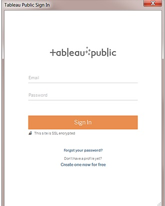
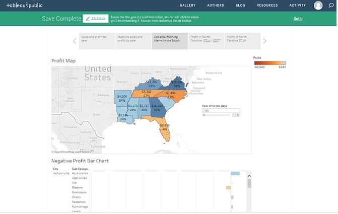

Etapa 8:
Compartilhar suas descobertas
Não deveria ser difícil compartilhar essas informações com seus colegas de equipe. Com o Tableau não é.
Quando você publica no Tableau Public, como o nome sugere, essas exibições são acessíveis ao público. Isso significa que você compartilha suas exibições assim como seus dados subjacentes com qualquer pessoa que tem acesso à Internet.
Selecione Servidor > Tableau Public > Salvar para o Tableau Public.
Insira suas credenciais do Tableau Public na caixa de diálogo.
Se não tiver um perfil do Tableau Public, não se preocupe! Basta clicar em Criar um gratuitamente.
Na caixa de diálogo exibida, selecione Criar extração de dados e clique em Extração.

Pela segunda (e última) vez, selecione Servidor > Tableau Public > Salvar para o Tableau Public.
Quando o navegador abrir, analise a história inserida. Ela terá esta aparência:

Clique em Editar detalhes para atualizar o título da visualização, adicione uma descrição e mais.
Clique em Salvar.
Sua história agora está na Web.
Para compartilhar com colegas, clique em Compartilhar na parte inferior da visualização.
Inseri-la em seu site: copie o código do campo Inserir código e cole-o no HTML de sua página da Web.
Enviar um link: copie o Link e envie para seus colegas.
Enviar um e-mail usando seu cliente de e-mail padrão: clique no ícone do e-mail.
Compartilhar no Twitter ou no Facebook: clique no ícone apropriado.